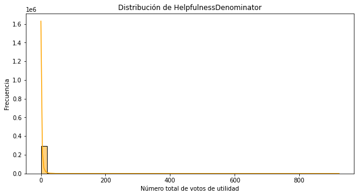
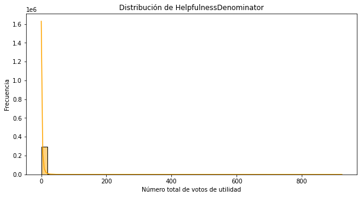

Maestría en Analítica de Datos#
Proyecto Final Machine Learning 2025-10#
ETL y EDA#
# Importar librerías necesarias
from datasets import load_dataset
import pandas as pd
# Cargar el dataset desde Huggin Face
dataset = load_dataset("akshatmehta98/amazon_reviews")
# Mostrando estructura del dataset
dataset
---------------------------------------------------------------------------
KeyboardInterrupt Traceback (most recent call last)
/var/folders/6f/tr98z70j73n1m4xh0tbwvs4h0000gn/T/ipykernel_8098/1234065675.py in <module>
4
5 # Cargar el dataset desde Huggin Face
----> 6 dataset = load_dataset("akshatmehta98/amazon_reviews")
7
8 # Mostrando estructura del dataset
/opt/miniconda3/envs/ml_venv/lib/python3.9/site-packages/datasets/load.py in load_dataset(path, name, data_dir, data_files, split, cache_dir, features, download_config, download_mode, verification_mode, keep_in_memory, save_infos, revision, token, streaming, num_proc, storage_options, trust_remote_code, **config_kwargs)
2059
2060 # Create a dataset builder
-> 2061 builder_instance = load_dataset_builder(
2062 path=path,
2063 name=name,
/opt/miniconda3/envs/ml_venv/lib/python3.9/site-packages/datasets/load.py in load_dataset_builder(path, name, data_dir, data_files, cache_dir, features, download_config, download_mode, revision, token, storage_options, trust_remote_code, _require_default_config_name, **config_kwargs)
1779 download_config = download_config.copy() if download_config else DownloadConfig()
1780 download_config.storage_options.update(storage_options)
-> 1781 dataset_module = dataset_module_factory(
1782 path,
1783 revision=revision,
/opt/miniconda3/envs/ml_venv/lib/python3.9/site-packages/datasets/load.py in dataset_module_factory(path, revision, download_config, download_mode, dynamic_modules_path, data_dir, data_files, cache_dir, trust_remote_code, _require_default_config_name, _require_custom_configs, **download_kwargs)
1618 else:
1619 use_exported_dataset_infos = True
-> 1620 return HubDatasetModuleFactoryWithoutScript(
1621 path,
1622 commit_hash=commit_hash,
/opt/miniconda3/envs/ml_venv/lib/python3.9/site-packages/datasets/load.py in get_module(self)
1015 patterns = sanitize_patterns(next(iter(metadata_configs.values()))["data_files"])
1016 else:
-> 1017 patterns = get_data_patterns(base_path, download_config=self.download_config)
1018 data_files = DataFilesDict.from_patterns(
1019 patterns,
/opt/miniconda3/envs/ml_venv/lib/python3.9/site-packages/datasets/data_files.py in get_data_patterns(base_path, download_config)
472 resolver = partial(resolve_pattern, base_path=base_path, download_config=download_config)
473 try:
--> 474 return _get_data_files_patterns(resolver)
475 except FileNotFoundError:
476 raise EmptyDatasetError(f"The directory at {base_path} doesn't contain any data files") from None
/opt/miniconda3/envs/ml_venv/lib/python3.9/site-packages/datasets/data_files.py in _get_data_files_patterns(pattern_resolver)
261 pattern = split_pattern.replace("{split}", "*")
262 try:
--> 263 data_files = pattern_resolver(pattern)
264 except FileNotFoundError:
265 continue
/opt/miniconda3/envs/ml_venv/lib/python3.9/site-packages/datasets/data_files.py in resolve_pattern(pattern, base_path, allowed_extensions, download_config)
359 matched_paths = [
360 filepath if filepath.startswith(protocol_prefix) else protocol_prefix + filepath
--> 361 for filepath, info in fs.glob(pattern, detail=True, **glob_kwargs).items()
362 if (info["type"] == "file" or (info.get("islink") and os.path.isfile(os.path.realpath(filepath))))
363 and (xbasename(filepath) not in files_to_ignore)
/opt/miniconda3/envs/ml_venv/lib/python3.9/site-packages/huggingface_hub/hf_file_system.py in glob(self, path, **kwargs)
519 kwargs = {"expand_info": kwargs.get("detail", False), **kwargs}
520 path = self.resolve_path(path, revision=kwargs.get("revision")).unresolve()
--> 521 return super().glob(path, **kwargs)
522
523 def find(
/opt/miniconda3/envs/ml_venv/lib/python3.9/site-packages/fsspec/spec.py in glob(self, path, maxdepth, **kwargs)
607 depth = None
608
--> 609 allpaths = self.find(root, maxdepth=depth, withdirs=True, detail=True, **kwargs)
610
611 pattern = glob_translate(path + ("/" if ends_with_sep else ""))
/opt/miniconda3/envs/ml_venv/lib/python3.9/site-packages/huggingface_hub/hf_file_system.py in find(self, path, maxdepth, withdirs, detail, refresh, revision, **kwargs)
554 """
555 if maxdepth:
--> 556 return super().find(
557 path, maxdepth=maxdepth, withdirs=withdirs, detail=detail, refresh=refresh, revision=revision, **kwargs
558 )
/opt/miniconda3/envs/ml_venv/lib/python3.9/site-packages/fsspec/spec.py in find(self, path, maxdepth, withdirs, detail, **kwargs)
500 out[path] = self.info(path)
501
--> 502 for _, dirs, files in self.walk(path, maxdepth, detail=True, **kwargs):
503 if withdirs:
504 files.update(dirs)
/opt/miniconda3/envs/ml_venv/lib/python3.9/site-packages/huggingface_hub/hf_file_system.py in walk(self, path, *args, **kwargs)
501 kwargs = {"expand_info": kwargs.get("detail", False), **kwargs}
502 path = self.resolve_path(path, revision=kwargs.get("revision")).unresolve()
--> 503 yield from super().walk(path, *args, **kwargs)
504
505 def glob(self, path: str, **kwargs) -> List[str]:
/opt/miniconda3/envs/ml_venv/lib/python3.9/site-packages/fsspec/spec.py in walk(self, path, maxdepth, topdown, on_error, **kwargs)
425 detail = kwargs.pop("detail", False)
426 try:
--> 427 listing = self.ls(path, detail=True, **kwargs)
428 except (FileNotFoundError, OSError) as e:
429 if on_error == "raise":
/opt/miniconda3/envs/ml_venv/lib/python3.9/site-packages/huggingface_hub/hf_file_system.py in ls(self, path, detail, refresh, revision, **kwargs)
370 kwargs = {"expand_info": detail, **kwargs}
371 try:
--> 372 out = self._ls_tree(path, refresh=refresh, revision=revision, **kwargs)
373 except EntryNotFoundError:
374 # Path could be a file
/opt/miniconda3/envs/ml_venv/lib/python3.9/site-packages/huggingface_hub/hf_file_system.py in _ls_tree(self, path, recursive, refresh, revision, expand_info)
461 repo_type=resolved_path.repo_type,
462 )
--> 463 for path_info in tree:
464 if isinstance(path_info, RepoFile):
465 cache_path_info = {
/opt/miniconda3/envs/ml_venv/lib/python3.9/site-packages/huggingface_hub/hf_api.py in list_repo_tree(self, repo_id, path_in_repo, recursive, expand, revision, repo_type, token)
3056 encoded_path_in_repo = "/" + quote(path_in_repo, safe="") if path_in_repo else ""
3057 tree_url = f"{self.endpoint}/api/{repo_type}s/{repo_id}/tree/{revision}{encoded_path_in_repo}"
-> 3058 for path_info in paginate(path=tree_url, headers=headers, params={"recursive": recursive, "expand": expand}):
3059 yield (RepoFile(**path_info) if path_info["type"] == "file" else RepoFolder(**path_info))
3060
/opt/miniconda3/envs/ml_venv/lib/python3.9/site-packages/huggingface_hub/utils/_pagination.py in paginate(path, params, headers)
34 """
35 session = get_session()
---> 36 r = session.get(path, params=params, headers=headers)
37 hf_raise_for_status(r)
38 yield from r.json()
/opt/miniconda3/envs/ml_venv/lib/python3.9/site-packages/requests/sessions.py in get(self, url, **kwargs)
600
601 kwargs.setdefault("allow_redirects", True)
--> 602 return self.request("GET", url, **kwargs)
603
604 def options(self, url, **kwargs):
/opt/miniconda3/envs/ml_venv/lib/python3.9/site-packages/requests/sessions.py in request(self, method, url, params, data, headers, cookies, files, auth, timeout, allow_redirects, proxies, hooks, stream, verify, cert, json)
587 }
588 send_kwargs.update(settings)
--> 589 resp = self.send(prep, **send_kwargs)
590
591 return resp
/opt/miniconda3/envs/ml_venv/lib/python3.9/site-packages/requests/sessions.py in send(self, request, **kwargs)
701
702 # Send the request
--> 703 r = adapter.send(request, **kwargs)
704
705 # Total elapsed time of the request (approximately)
/opt/miniconda3/envs/ml_venv/lib/python3.9/site-packages/huggingface_hub/utils/_http.py in send(self, request, *args, **kwargs)
94 logger.debug(f"Send: {_curlify(request)}")
95 try:
---> 96 return super().send(request, *args, **kwargs)
97 except requests.RequestException as e:
98 request_id = request.headers.get(X_AMZN_TRACE_ID)
/opt/miniconda3/envs/ml_venv/lib/python3.9/site-packages/requests/adapters.py in send(self, request, stream, timeout, verify, cert, proxies)
665
666 try:
--> 667 resp = conn.urlopen(
668 method=request.method,
669 url=url,
/opt/miniconda3/envs/ml_venv/lib/python3.9/site-packages/urllib3/connectionpool.py in urlopen(self, method, url, body, headers, retries, redirect, assert_same_host, timeout, pool_timeout, release_conn, chunked, body_pos, **response_kw)
697
698 # Make the request on the httplib connection object.
--> 699 httplib_response = self._make_request(
700 conn,
701 method,
/opt/miniconda3/envs/ml_venv/lib/python3.9/site-packages/urllib3/connectionpool.py in _make_request(self, conn, method, url, timeout, chunked, **httplib_request_kw)
443 # Python 3 (including for exceptions like SystemExit).
444 # Otherwise it looks like a bug in the code.
--> 445 six.raise_from(e, None)
446 except (SocketTimeout, BaseSSLError, SocketError) as e:
447 self._raise_timeout(err=e, url=url, timeout_value=read_timeout)
/opt/miniconda3/envs/ml_venv/lib/python3.9/site-packages/urllib3/packages/six.py in raise_from(value, from_value)
/opt/miniconda3/envs/ml_venv/lib/python3.9/site-packages/urllib3/connectionpool.py in _make_request(self, conn, method, url, timeout, chunked, **httplib_request_kw)
438 # Python 3
439 try:
--> 440 httplib_response = conn.getresponse()
441 except BaseException as e:
442 # Remove the TypeError from the exception chain in
/opt/miniconda3/envs/ml_venv/lib/python3.9/http/client.py in getresponse(self)
1375 try:
1376 try:
-> 1377 response.begin()
1378 except ConnectionError:
1379 self.close()
/opt/miniconda3/envs/ml_venv/lib/python3.9/http/client.py in begin(self)
318 # read until we get a non-100 response
319 while True:
--> 320 version, status, reason = self._read_status()
321 if status != CONTINUE:
322 break
/opt/miniconda3/envs/ml_venv/lib/python3.9/http/client.py in _read_status(self)
279
280 def _read_status(self):
--> 281 line = str(self.fp.readline(_MAXLINE + 1), "iso-8859-1")
282 if len(line) > _MAXLINE:
283 raise LineTooLong("status line")
/opt/miniconda3/envs/ml_venv/lib/python3.9/socket.py in readinto(self, b)
714 while True:
715 try:
--> 716 return self._sock.recv_into(b)
717 except timeout:
718 self._timeout_occurred = True
/opt/miniconda3/envs/ml_venv/lib/python3.9/ssl.py in recv_into(self, buffer, nbytes, flags)
1273 "non-zero flags not allowed in calls to recv_into() on %s" %
1274 self.__class__)
-> 1275 return self.read(nbytes, buffer)
1276 else:
1277 return super().recv_into(buffer, nbytes, flags)
/opt/miniconda3/envs/ml_venv/lib/python3.9/ssl.py in read(self, len, buffer)
1131 try:
1132 if buffer is not None:
-> 1133 return self._sslobj.read(len, buffer)
1134 else:
1135 return self._sslobj.read(len)
KeyboardInterrupt:
# Convertimos a DataFrame para visualizar mejor
df_train = dataset['train'].to_pandas()
df_test = dataset['test'].to_pandas()
# Veamos las primeras filas del train
df_train.head(10)
| HelpfulnessNumerator | HelpfulnessDenominator | Summary | text | labels | sentiment_code | input_ids | attention_mask | |
|---|---|---|---|---|---|---|---|---|
| 0 | 0 | 0 | Great find! | these candies are very hard to find in the sin... | positive | 2 | [ 0 6097 831 34204 621 4552 7... | [1 1 1 1 1 1 1 1 1 1 1 1 1 1 1 1 1 1 1 1 1 1 1... |
| 1 | 0 | 0 | very tasty - and healthy | im on the healthy nutrition and fitness kick t... | positive | 2 | [ 0 566 98 70 87349 150017 ... | [1 1 1 1 1 1 1 1 1 1 1 1 1 1 1 1 1 1 1 1 1 1 1... |
| 2 | 0 | 0 | I liked the old man design better :) | i dont normally add content to amazon because ... | positive | 2 | [ 0 17 13319 3638 538 15190 10... | [1 1 1 1 1 1 1 1 1 1 1 1 1 1 1 1 1 1 1 1 1 1 1... |
| 3 | 0 | 0 | Good gluten free cookie! | good tasting cookie will satisfy your sweet to... | positive | 2 | [ 0 4127 3251 1916 9332 1221 40407 ... | [1 1 1 1 1 1 1 1 1 1 1 1 1 1 1 1 1 1 1 1 1 1 1... |
| 4 | 88 | 95 | Organic but BPA in the lid! | our baby really loves to eat these and they co... | negative | 0 | [ 0 2446 15546 6183 5161 7 ... | [1 1 1 1 1 1 1 1 1 1 1 1 1 1 1 1 1 1 1 1 1 1 1... |
| 5 | 0 | 0 | a must for gin and tonic | i once tried q tonic for my gin and tonic now ... | positive | 2 | [ 0 17 24145 37842 8096 47 6... | [1 1 1 1 1 1 1 1 1 1 1 1 1 1 1 1 1 1 1 1 1 1 1... |
| 6 | 1 | 2 | Delicious! | glad i ordered these they are really yummy i g... | positive | 2 | [ 0 9525 17 12989 297 6097 1... | [1 1 1 1 1 1 1 1 1 1 1 1 1 1 1 1 1 1 1 1 1 1 1... |
| 7 | 0 | 0 | Great tasting tea at best price | my family is big on tea drinking and cant sett... | positive | 2 | [ 0 759 14449 83 6957 98 26... | [1 1 1 1 1 1 1 1 1 1 1 1 1 1 1 1 1 1 1 1 1 1 1... |
| 8 | 6 | 9 | Tasted bad. Tossed most in the trash | i lived in the islands for 5 years and i know ... | negative | 0 | [ 0 17 158930 23 70 90695 ... | [1 1 1 1 1 1 1 1 1 1 1 1 1 1 1 1 1 1 1 1 1 1 1... |
| 9 | 0 | 0 | Awesome service and great products | we sent this product as a gift to my husbands ... | positive | 2 | [ 0 642 9325 903 12996 237 ... | [1 1 1 1 1 1 1 1 1 1 1 1 1 1 1 1 1 1 1 1 1 1 1... |
#Revisión general del train
df_train.info()
<class 'pandas.core.frame.DataFrame'>
RangeIndex: 303316 entries, 0 to 303315
Data columns (total 8 columns):
# Column Non-Null Count Dtype
--- ------ -------------- -----
0 HelpfulnessNumerator 303316 non-null int64
1 HelpfulnessDenominator 303316 non-null int64
2 Summary 303316 non-null object
3 text 303316 non-null object
4 labels 303316 non-null object
5 sentiment_code 303316 non-null int64
6 input_ids 303316 non-null object
7 attention_mask 303316 non-null object
dtypes: int64(3), object(5)
memory usage: 18.5+ MB
df_train.describe()
| HelpfulnessNumerator | HelpfulnessDenominator | sentiment_code | |
|---|---|---|---|
| count | 303316.000000 | 303316.000000 | 303316.000000 |
| mean | 1.844644 | 2.815661 | 0.929773 |
| std | 6.636582 | 7.804405 | 0.833000 |
| min | 0.000000 | 0.000000 | 0.000000 |
| 25% | 0.000000 | 0.000000 | 0.000000 |
| 50% | 0.000000 | 1.000000 | 1.000000 |
| 75% | 2.000000 | 3.000000 | 2.000000 |
| max | 844.000000 | 923.000000 | 2.000000 |
# Distribución de la variable Objetivo en el train
df_train["labels"].value_counts(normalize=True)
negative 0.384523
positive 0.314296
neutral 0.301181
Name: labels, dtype: float64
# Calculemos la longitud de las reseñas en PALABRAS
df_train["length_words"] = df_train["text"].apply(lambda x: len(str(x).split()))
# Calculemos la longitud de las reseñas en CARACTERES
df_train["length_chars"] = df_train["text"].apply(lambda x: len(str(x)))
# Librerías necesarias
import matplotlib.pyplot as plt
import seaborn as sns
# Histograma de longitud en palabras
plt.figure(figsize=(10,5))
sns.histplot(df_train['length_words'], bins=50, kde=True)
plt.title('Distribución de la longitud de reseñas (palabras)')
plt.xlabel('Número de palabras')
plt.ylabel('Frecuencia')
plt.show()
# Histograma de longitud en caracteres
plt.figure(figsize=(10,5))
sns.histplot(df_train['length_chars'], bins=50, kde=True, color='orange')
plt.title('Distribución de la longitud de reseñas (caracteres)')
plt.xlabel('Número de caracteres')
plt.ylabel('Frecuencia')
plt.show()


# Relacionamos longitud con el sentimiento
sns.boxplot(data=df_train, x='labels', y='length_words')
plt.title('Longitud de reseñas por tipo de sentimiento (en palabras)')
plt.xlabel('Sentimiento')
plt.ylabel('N° de palabras')
plt.show()

# Distribución de las variables HelpfulnessNumerator y HelpfulnessDenominator
# HelpfulnessNumerator
plt.figure(figsize=(10,5))
sns.histplot(df_train['HelpfulnessNumerator'], bins=50, kde=True)
plt.title('Distribución de HelpfulnessNumerator')
plt.xlabel('Número de personas que encontraron útil la reseña')
plt.ylabel('Frecuencia')
plt.show()
# HelpfulnessDenominator
plt.figure(figsize=(10,5))
sns.histplot(df_train['HelpfulnessDenominator'], bins=50, kde=True, color='orange')
plt.title('Distribución de HelpfulnessDenominator')
plt.xlabel('Número total de votos de utilidad')
plt.ylabel('Frecuencia')
plt.show()
 

# Agregamos una columna de ratio de utilidad
# Esto normaliza un poco el análisis
df_train['helpfulness_ratio'] = df_train['HelpfulnessNumerator'] / (df_train['HelpfulnessDenominator'] + 1)
#Visualizamos la distribución del ratio de utilidad
plt.figure(figsize=(10,5))
sns.histplot(df_train['helpfulness_ratio'], bins=50, kde=True, color='green')
plt.title('Distribución del Ratio de Helpfulness')
plt.xlabel('Ratio de utilidad')
plt.ylabel('Frecuencia')
plt.show()

# Veamos una posible relación entre longitud y utilidad
plt.figure(figsize=(10,5))
sns.scatterplot(data=df_train, x='length_words', y='helpfulness_ratio', alpha=0.3)
plt.title('Longitud vs. Ratio de Helpfulness')
plt.xlabel('N° de palabras')
plt.ylabel('Ratio de utilidad')
plt.show()

# Vamos a limpiar el texto para una visualización a través de WordCloud
# Para empezar, importaremos las librerías necesarias
import nltk
import re
import string
# Descargar stopwords solo una vez
nltk.download('stopwords')
from nltk.corpus import stopwords
stop_words = set(stopwords.words('english'))
[nltk_data] Downloading package stopwords to
[nltk_data] /Users/gustavo/nltk_data...
[nltk_data] Package stopwords is already up-to-date!
# Realizaremos una función para limpiar el texto
def limpiar_texto(texto):
# Pasar a minúsculas
texto = texto.lower()
# Eliminar números
texto = re.sub(r'\d+', '', texto)
# Eliminar puntuación
texto = texto.translate(str.maketrans('', '', string.punctuation))
# Eliminar stopwords
texto = " ".join([word for word in texto.split() if word not in stop_words])
return texto
# Creamos una nueva columna en el DataFrame con el texto limpio (Solo para visualización)
df_train['clean_text'] = df_train['text'].apply(limpiar_texto)
# Con el texto limpio, procedemos a crear una nube de palabras con wordcloud, por sentimiento
from collections import Counter
import matplotlib.pyplot as plt
def top_palabras_por_clase(df, clase, n=20):
subset = df[df['labels'] == clase]
texto = " ".join(subset['clean_text'].dropna())
palabras = texto.split()
top = Counter(palabras).most_common(n)
palabras, freqs = zip(*top)
plt.figure(figsize=(10, 5))
plt.barh(palabras[::-1], freqs[::-1], color='skyblue')
plt.title(f'Top {n} palabras - {clase.capitalize()}')
plt.xlabel("Frecuencia")
plt.tight_layout()
plt.show()
for clase in ['positive', 'negative', 'neutral']:
top_palabras_por_clase(df_train, clase)


# Vamos a calcular TF-IDF para visualizar la importancia de las palabras por clase
#libreria necesaria
from sklearn.feature_extraction.text import TfidfVectorizer
# Agrupar el texto por clase
textos_por_clase = df_train.groupby("labels")["clean_text"].apply(lambda x: " ".join(x.dropna()))
# Creamos el vectorizador TF-IDF
vectorizer = TfidfVectorizer(stop_words='english', max_features=5000)
# Aplicamos a los textos agrupados por clase
tfidf_matrix = vectorizer.fit_transform(textos_por_clase)
# Obtenemos nombres de las palabras
palabras = vectorizer.get_feature_names_out()
# Creamos un DataFrame TF-IDF con clases como índice y palabras como columnas
df_tfidf = pd.DataFrame(tfidf_matrix.toarray(), index=textos_por_clase.index, columns=palabras)
# Creamos una función para visualizar el top de palabras por clase
def mostrar_top_tfidf(clase, top_n=20):
serie = df_tfidf.loc[clase].sort_values(ascending=False)[:top_n]
plt.figure(figsize=(10,5))
plt.barh(serie.index[::-1], serie.values[::-1], color='tomato')
plt.title(f'Top {top_n} palabras con mayor TF-IDF en clase: {clase}')
plt.xlabel('Peso TF-IDF')
plt.tight_layout()
plt.show()
# Mostramos el top de palabras por clase
for clase in ['positive', 'negative', 'neutral']:
mostrar_top_tfidf(clase)


# Distribución de la variable Objetivo en el test
df_test["labels"].value_counts(normalize=True)
negative 0.386659
positive 0.314115
neutral 0.299226
Name: labels, dtype: float64
# Sacamos los datos de validación de los datos de ntrenamiento
from sklearn.model_selection import train_test_split
# Dividir df_train en train y valid (80/20)
df_train_split, df_valid = train_test_split(df_train, test_size=0.2, random_state=42, stratify=df_train['sentiment_code'])
print("Train split:", df_train_split.shape)
print("Valid split:", df_valid.shape)
Train split: (242652, 12)
Valid split: (60664, 12)
Tokenización y Embeddings#
# Verificamos que el equipo (MAC) este usando la GPU
import torch
device = 'mps' if torch.backends.mps.is_available() else 'cpu'
print(f"✅ Dispositivo seleccionado: {device}")
✅ Dispositivo seleccionado: mps
import os
os.environ["USE_TF"] = "0"
# Usaremos un modelo preentrenado basado en transformers para generar los embeddings
from sentence_transformers import SentenceTransformer
model = SentenceTransformer('all-mpnet-base-v2',device=device)
# Generar embeddings
X_train = model.encode(df_train_split['text'].tolist(), show_progress_bar=True)
X_valid = model.encode(df_valid['text'].tolist(), show_progress_bar=True)
X_test = model.encode(df_test['text'].tolist(), show_progress_bar=True)
# Etiquetas
y_train = df_train_split['sentiment_code'].values
y_valid = df_valid['sentiment_code'].values
y_test = df_test['sentiment_code'].values
# Confirmar formas
print("✅ X_train:", X_train.shape)
print("✅ X_valid:", X_valid.shape)
print("✅ X_test: ", X_test.shape)
✅ X_train: (242652, 768)
✅ X_valid: (60664, 768)
✅ X_test: (116661, 768)
# Guardamos los embeddings y etiquetas en archivos .npy
import numpy as np
# Guardar embeddings
np.save("X_train_embeddings.npy", X_train)
np.save("X_valid_embeddings.npy", X_valid)
np.save("X_test_embeddings.npy", X_test)
# Guardar etiquetas
np.save("y_train.npy", y_train)
np.save("y_valid.npy", y_valid)
np.save("y_test.npy", y_test)
print("✅ Archivos guardados correctamente.")
✅ Archivos guardados correctamente.
# Para cargar los embeddings y etiquetas en otro script, usar:
X_train = np.load("X_train_embeddings.npy")
X_valid = np.load("X_valid_embeddings.npy")
X_test = np.load("X_test_embeddings.npy")
y_train = np.load("y_train.npy")
y_valid = np.load("y_valid.npy")
y_test = np.load("y_test.npy")